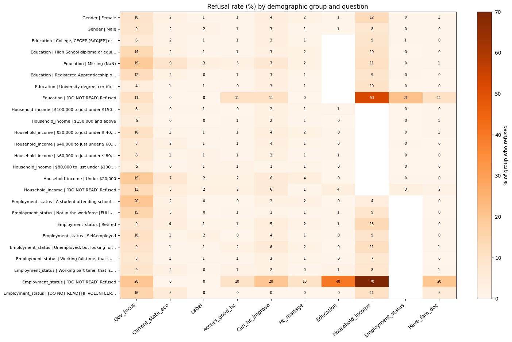

# import libraries
import pandas as pd
import numpy as np
import matplotlib.pyplot as plt Load Dataset
# load in data
df = pd.read_csv("cdn-attitudes-healthcare_attitudes-canadiens-system-soins.csv")Lots of features in this dataset, need to pare down response variable and explanatory variables - Response variable: Q3 - How would you rate the current state of the Canadian health care system? (1-10, 10 good, 1 bad, 99 - refused to answer)
- Explanatory variables:
- Q1 CODM_1: Thinking of the issues facing Canada today, which one would you say the Government of Canada should focus on most?
- more than 6 responses, check data dictionary for more details
- Rename: Gov_focus
- Q2 How would you rate the current state of the Canadian economy?
- 1-10 likert scale, 1 - terrible, 10 - excellent, 99 - did not know / refused to answer
- Rename: Current_state_eco
- Q4 To what degree do you agree or disagree with the following statement? I am confident that if I or a family member were to become seriously ill, we would be able to access good health care services
- 1-4 likert, 1 - Agree, 4 - strongly disagree, 5 - Dont know
- Rename: Access_good_hc
- Q5 Over the next five years, do you think the Canadian health care system will significantly improve, improve somewhat, stay the same, worsen somewhat, or significantly worsen?
- 1-5 likert, 1 - Significantly improve, 5 - Significantly worsen, 9 - Dont know
- Rename: Can_hc_improve
- Q6A_M1 Which of the following do you feel is the most serious challenge facing the Canadian health care system?
- Code this as categorical (lots of possible responses, see data dictionary for more info)
- Rename: Most_challenge_hc
- Q7 Which of the following two statements comes closer to your point of view:
- 1 (current healthcare spending needs to be managed more effienctly)
- 2 (healthcare system needs more funding)
- 3 (Both; but this answer has an odd coding)
- 4 None
- 5 Refused to answer
- Rename: Hc_manage
- AGE
- age in years
- Q12 Demographics Education
- 1 None
- 2 High School diploma or equivalent
- 3 Registered Apprenticeship or other trades certificate or diploma
- 4 College, CEGEP or other non-university certificate or diploma
- 5 University degree, certificate or diploma
- 9 Refused
- Rename: Education
- Q13 Demographics total household income
- 1 Under $20,000
- 2 $ 20,000 to just under $ 40,000
- 3 $ 40,000 to just under $ 60,000
- 4 $ 60,000 to just under $ 80,000
- 5 $ 80,000 to just under $ 100,000
- 6 $ 100,000 to just under $ 150,000
- 7 $ 150,000 and above
- 8 Refused
- Rename: Household_income
- Q14 Employment Status
- 1 Working full-time, that is, 35 or more hours per week
- 2 Working part-time, that is, less than 35 hours per week
- 3 Self-employed
- 4 Unemployed, but looking for work
- 5 A student attending school full-time
- 6 Retired
- 7 Not in the workforce [FULL-TIME HOMEMAKER, UNEMPLOYED, NOT WORKING FOR WORK]
- 8 [IF VOLUNTEERED: Other – DO NOT SPECIFY]
- 9 Refused
- Rename: Employment_status
- Q15 Do you currently have a family doctor?
- 1 Yes
- 2 No
- 3 DK/RF
- Rename: Have_fam_doc
- Q16 Gender
- 1 Male
- 2 Female
- Rename: Gender
- SREGCODE
- Province
- Rename: Province
- REGGRP
- Area (generalized, praries, QN, BC etc.)
- Rename: Area
- WTS
- Sampling weight
- Q1 CODM_1: Thinking of the issues facing Canada today, which one would you say the Government of Canada should focus on most?
Subset df to select desired variables
explanatory_variables = ['Q1_CODM1', 'Q2', 'Q4', 'Q5', 'Q6A_M1', 'Q7', 'AGE', 'Q12','Q13','Q14','Q15',
'Q16', 'SREGCODE', 'REGGRP', 'Q3', 'WTS']
column_names = ['Gov_focus','Current_state_eco','Access_good_hc','Can_hc_improve','Most_challenge_hc','Hc_manage',
'Education', 'Household_income', 'Employment_status', 'Have_fam_doc','Gender','Province', 'Area', 'Weight']# subset using intersection and list of explanatory variables
df_cols = df.columns.intersection(explanatory_variables)df_subset = df[df_cols]df_subset = df_subset.rename(columns={'Q1_CODM1': 'Gov_focus',
'Q2': 'Current_state_eco',
'Q4': 'Access_good_hc',
'Q5': 'Can_hc_improve',
'Q6A_M1': 'Most_challenge_hc',
'Q7': 'Hc_manage',
'Q12': 'Education',
'Q13': 'Household_income',
'Q14': 'Employment_status',
'Q15': 'Have_fam_doc',
'Q16': 'Gender',
'SREGCODE': 'Province',
'REGGRP': 'Area',
'WTS': 'Weight',
'Q3': 'Label'}, inplace=False)df_subset.head()| Gov_focus | Current_state_eco | Label | Access_good_hc | Can_hc_improve | Most_challenge_hc | Hc_manage | Education | Household_income | Employment_status | Have_fam_doc | Gender | Province | Weight | AGE | Area | |
|---|---|---|---|---|---|---|---|---|---|---|---|---|---|---|---|---|
| 0 | Economy | 8 | 8 | Strongly agree | Stay the same | #NULL! | Current healthcare spending needs to be manage… | University degree, certificate or diploma | $100,000 to just under $150,000 | Retired | Yes | Male | Manitoba | 0.4657 | 66 | Prairies |
| 1 | Education | 5 | 8 | Somewhat agree | Stay the same | The rising cost of providing health care services | Current healthcare spending needs to be manage… | NaN | $40,000 to just under $ 60,000 | Working part-time, that is, less than 35 hours… | Yes | Female | Alberta | 1.3168 | 30 | Prairies |
| 2 | Education | 7 | 8 | Strongly agree | Stay the same | #NULL! | The health care system needs increased funding. | College, CEGEP [SAY-JEP] or other non-universi… | $80,000 to just under $100,000 | Self-employed | Yes | Male | Nova Scotia | 0.8577 | 37 | ATL |
| 3 | Economy | 7 | 6 | Somewhat agree | Worsen somewhat | #NULL! | Current healthcare spending needs to be manage… | University degree, certificate or diploma | $80,000 to just under $100,000 | Working full-time, that is, 35 or more hours p… | Yes | Female | British Columbia | 1.2259 | 50 | BC |
| 4 | Jobs/Unemployment | 9 | 8 | Strongly agree | Improve somewhat | #NULL! | Current healthcare spending needs to be manage… | College, CEGEP [SAY-JEP] or other non-universi… | $20,000 to just under $ 40,000 | Retired | Yes | Male | Nova Scotia | 0.3870 | 80 | ATL |
| … | … | … | … | … | … | … | … | … | … | … | … | … | … | … | … | … |
| 2498 | Environment | 3 | 5 | Strongly disagree | Worsen somewhat | #NULL! | Current healthcare spending needs to be manage… | University degree, certificate or diploma | $60,000 to just under $ 80,000 | Working part-time, that is, less than 35 hours… | Yes | Female | Ontario | 0.9094 | 56 | ON |
| 2499 | Education | 6 | 8 | Strongly agree | Stay the same | #NULL! | The health care system needs increased funding. | University degree, certificate or diploma | $150,000 and above | Not in the workforce [FULL-TIME HOMEMAKER, UNE… | No | Female | Ontario | 1.7661 | 43 | ON |
| 2500 | Social problems/Social programs/Social services | 5 | 9 | Somewhat disagree | Worsen somewhat | #NULL! | Current healthcare spending needs to be manage… | University degree, certificate or diploma | $150,000 and above | Working full-time, that is, 35 or more hours p… | Yes | Female | Ontario | 1.7661 | 43 | ON |
| 2501 | Dk/Ref | 5 | 6 | Strongly agree | Stay the same | #NULL! | Current healthcare spending needs to be manage… | College, CEGEP [SAY-JEP] or other non-universi… | $80,000 to just under $100,000 | Working full-time, that is, 35 or more hours p… | Yes | Female | Ontario | 1.7661 | 45 | ON |
| 2502 | Health care system | 6 | 8 | Somewhat agree | Stay the same | #NULL! | Current healthcare spending needs to be manage… | High School diploma or equivalent | $20,000 to just under $ 40,000 | Retired | Yes | Male | Ontario | 0.7903 | 72 | ON |
2503 rows × 16 columns
# Clean dataset
# Remove entries with 99 for Gov_focus, and Current_state_eco
# Remove entries with 5 and 9 for Access_good_hc and Can_hc_improve
# Remove 9 from Most_challenge_hc
# Remove 5 from Hc_manage
# Remove most missing data from Eduction and 9
# Remove 8 from HC income
# Remove 9 from Employment_status
# Remove 3 from Have_fam_doc
# does it make sense to remove all these values? They're still meaningful even if they refused to answer
# they represent a valid response
# Visualize the count of each answer for each column Onto: Data Cleaning, Wrangling
# Show cumulative number of each unique response per variable
for cols in df_subset.columns:
print(f"Value counts for {cols}:")
print(df_subset[cols].value_counts(dropna=False))
print("\n")Value counts for Gov_focus:
Gov_focus
Economy 552
Health care system 463
Jobs/Unemployment 265
Dk/Ref 234
Environment 131
Cost of living/High taxes 99
Education 91
Debt reduction/Debt/Deficit 88
Poverty 83
Other 48
Helping elderly people/Seniors 47
Laws/Justice system 45
Immigration 44
Canada/Canadian citizens 41
Social problems/Social programs/Social services 36
Federal/Provincial relations/Place of QC in Canada 32
Government spending 30
Foreign issues 25
Crime 22
Affordable housing 16
Aboriginal issues 16
Pension issues 16
Oil issues 14
Infrastructure/Roads 13
Child care 12
Family Virtues 10
National security/Military/Troops 9
Gun Controls/Registration 9
Welfare 7
Agriculture 5
Name: count, dtype: int64
Value counts for Current_state_eco:
Current_state_eco
7 700
6 568
5 483
8 296
4 180
3 89
Don't know/Refuse 51
1 - Terrible 48
9 38
2 29
10 - Excellent 21
Name: count, dtype: int64
Value counts for Label:
Label
7 549
5 474
6 419
8 358
4 217
3 125
1 - Terrible 106
9 91
2 73
10 - Excellent 63
Don't know/Refuse 28
Name: count, dtype: int64
Value counts for Access_good_hc:
Access_good_hc
Somewhat agree 1284
Strongly agree 655
Somewhat disagree 366
Strongly disagree 175
Don't know/Refuse 23
Name: count, dtype: int64
Value counts for Can_hc_improve:
Can_hc_improve
Stay the same 869
Worsen somewhat 663
Improve somewhat 585
Significantly worsen 197
Significantly improve 104
Don't know/Refuse 85
Name: count, dtype: int64
Value counts for Most_challenge_hc:
Most_challenge_hc
#NULL! 1251
Shortage of medical professionals such as doctors, nurses an 466
The aging of the Canadian population 357
The rising cost of providing health care services 220
An increase in chronic diseases among Canadians, such as dia 114
All of them 32
(DO NOT READ - VOLUNTEERED) Don't know/Refuse 31
Corruption/Mis-mangement of funds 7
Long Wait times/Delays 5
Lack of funding 5
Government bureaucracy 3
Need of Better Health Education 3
None of them 3
Abusive use of the Health Care system 3
Lack of hospoital resources (beds, equipment, etc) 1
Accessibility to Health Care 1
Cancer 1
Name: count, dtype: int64
Value counts for Hc_manage:
Hc_manage
Current healthcare spending needs to be managed more effecti 1460
The health care system needs increased funding. 819
(DO NOT READ - VOLUNTEERED) Both 182
(DO NOT READ - VOLUNTEERED) Don't know/Refuse 34
(DO NOT READ - VOLUNTEERED) None 8
Name: count, dtype: int64
Value counts for Education:
Education
University degree, certificate or diploma 753
College, CEGEP [SAY-JEP] or other non-university certificate 642
High School diploma or equivalent 637
Registered Apprenticeship or other trades certificate or dip 229
NaN 223
[DO NOT READ] Refused 19
Name: count, dtype: int64
Value counts for Household_income:
Household_income
$20,000 to just under $ 40,000 487
$40,000 to just under $ 60,000 422
$60,000 to just under $ 80,000 340
$100,000 to just under $150,000 305
$80,000 to just under $100,000 267
[DO NOT READ] Refused 252
Under $20,000 234
$150,000 and above 196
Name: count, dtype: int64
Value counts for Employment_status:
Employment_status
Working full-time, that is, 35 or more hours per week 900
Retired 811
Self-employed 244
Working part-time, that is, less than 35 hours per week 206
Not in the workforce [FULL-TIME HOMEMAKER, UNEMPLOYED, NOT L 151
Unemployed, but looking for work 117
A student attending school full-time 45
[DO NOT READ] [IF VOLUNTEERED: Other -- DO NOT SPECIFY] 19
[DO NOT READ] Refused 10
Name: count, dtype: int64
Value counts for Have_fam_doc:
Have_fam_doc
Yes 2178
No 314
Don't know/Refused 11
Name: count, dtype: int64
Value counts for Gender:
Gender
Female 1252
Male 1251
Name: count, dtype: int64
Value counts for Province:
Province
Ontario 691
Quebec 522
British Columbia 316
Alberta 301
Manitoba 143
Saskatchewon 140
Nova Scotia 115
New Brunswick 91
Newfoundland 64
Northwestern Territory 41
Yukon Territory 31
Nunavut 31
Prince Edward Island 17
Name: count, dtype: int64
Value counts for Weight:
Weight
0.7903 207
1.7661 163
0.9094 148
0.4657 142
0.7884 137
0.4047 136
0.9128 135
1.3469 131
0.7575 126
0.5811 103
1.3168 97
1.0004 86
0.3870 86
0.5864 86
2.1811 74
3.5985 73
0.6005 65
0.4663 64
1.5095 64
0.8577 62
1.2249 48
0.4522 40
2.6318 33
1.5967 29
0.0883 28
0.0331 27
1.2259 26
0.1570 17
0.0470 15
1.3626 14
0.0403 13
0.6950 9
0.6467 6
1.1124 6
1.0712 4
0.0724 3
Name: count, dtype: int64
Value counts for AGE:
AGE
55 69
53 67
68 66
64 64
59 64
..
91 4
89 3
90 3
98 1
97 1
Name: count, Length: 77, dtype: int64
Value counts for Area:
Area
ON 691
Prairies 584
QC 522
BC 316
ATL 287
North 103
Name: count, dtype: int64Sporadic cases of refusal to answer, and ‘DK/Ref’, alongisde NA and NaN values
Couple of ways to deal with this: - replace cells that contain ‘Refuse’ or ‘DK/Ref’ with na? - Maybe not the best pathway, this removes actual data, a refusal to answer is still an answer and we can’t treat it like a null value - instead, we can try to look at the demographic makeup of those who refused to answer and see if there are any patterns
# for each column, get the index of the rows that contain the string 'refuse', then, get the demographic averages
# of those rows (age, gender, province, area, education, income, employment status) to look for patterns
# ---- Demographic profile of people who refused / didn't know, per question ----
from IPython.display import display
REFUSE_PATTERN = r'refuse|dk/ref' # catches al of the "Don't know/Refuse", "[DO NOT READ] Refused", "Dk/Ref"
demo_cat_cols = ['Gender', 'Education', 'Household_income', 'Employment_status'] # variables I want to compare across
# Working copy: AGE is stored as text, Education has real NaNs -> label them so they show up
eda = df_subset.copy()
eda['AGE'] = pd.to_numeric(eda['AGE'], errors='coerce')
eda['Education'] = eda['Education'].fillna('Missing (NaN)')
eda['Weight'] = pd.to_numeric(eda['Weight'], errors='coerce')
# drop 'Most_challenge_hc' and 'Area'
eda.drop(columns=['Most_challenge_hc', 'Area'], inplace=True)
# this should be controlled earlier in the df by removing the '$' from column names
# escape it here to make sure matplotlib doesn't process it as math column
def short(s, n=28):
s = str(s)
return s if len(s) <= n else s[:n - 1] + '…'
def plot_label(s, n=28):
return short(s, n).replace('$', r'\$') # stop matplotlib reading "$...$" as math
# Questions that actually contain a refusal-type answer (demographic columns included)
question_cols = [c for c in eda.columns
if c != 'AGE' and eda[c].dtype == 'object'
and eda[c].str.contains(REFUSE_PATTERN, case=False, na=False).any()]
# REFUSE_PATTERN = r'refuse|dk/ref'
refuse_masks = {c: eda[c].str.contains(REFUSE_PATTERN, case=False, na=False) for c in question_cols}
# # ---------- 1. Summary table: one column per question, refusers vs. everyone else ----------
rows = []
for q, m in refuse_masks.items():
ref, rest = eda[m], eda[~m]
row = {'Question': q,
'n_refused': m.sum(),
'pct_refused': round(100 * m.mean(), 1),
'Age_mean (ref)': round(ref['AGE'].mean(), 1),
'Age_mean (rest)': round(rest['AGE'].mean(), 1),
'Age_median (ref)': ref['AGE'].median(),
'Age_median (rest)': rest['AGE'].median()}
for d in demo_cat_cols:
if d == q: # skip a demographic when it IS the question
continue
row[f'{d}_mode (ref)'] = short(ref[d].mode().iat[0])
row[f'{d}_mode (rest)'] = short(rest[d].mode().iat[0])
rows.append(row)
summary = pd.DataFrame(rows).set_index('Question')
# print("Refusers vs. non-refusers, per question")
# display(summary.T)
# ---------- 2. Refusal rate by demographic group across all questions (heatmap) ----------
# Each cell = % of people in that demographic group who refused that question
REF_COLOR, REST_COLOR = '#d95f02', '#7f8c9a'
rate_frames = []
for d in demo_cat_cols:
r = pd.DataFrame({q: eda.groupby(d)[q].apply(
lambda s: s.str.contains(REFUSE_PATTERN, case=False, na=False).mean() * 100)
for q in question_cols if q != d})
r.index = pd.MultiIndex.from_product([[d], r.index.map(short)])
rate_frames.append(r)
rates = pd.concat(rate_frames)
fig, ax = plt.subplots(figsize=(1.1 * len(question_cols) + 4, 0.32 * len(rates) + 1.5))
im = ax.imshow(rates.values, cmap='Oranges', aspect='auto')
ax.set_xticks(range(len(rates.columns)), rates.columns, rotation=40, ha='right')
ax.set_yticks(range(len(rates)), [plot_label(f"{a} | {b}", 60) for a, b in rates.index], fontsize=8)
for i in range(rates.shape[0]):
for j in range(rates.shape[1]):
v = rates.iat[i, j]
if pd.notna(v):
ax.text(j, i, f"{v:.0f}", ha='center', va='center', fontsize=7,
color='white' if v > np.nanmax(rates.values) * 0.6 else 'black')
fig.colorbar(im, ax=ax, label='% of group who refused')
ax.set_title('Refusal rate (%) by demographic group and question')
plt.tight_layout()
plt.show()

- Probably OK to remove the ‘did not refuse’ or ‘refuse to answer’, though there is some pattern to the resposnse rate of these questions:
- Refusal was more common in Females
- Refusal was more common in Education and Household income; these were also more likely to refuse to answer about employment status
- Not necessarily indicative of low or high in either categorical variables (low education or low household income)
- Refusal to employment status was indicative of greater rates of refusal in other areas: access_good_hc, can_hc_improve, education, household income etc. and have_fam_doc
- No large confounding pattern across multiple variables, good to remove these data alongside other ‘NA’ data
# cleanup rest of the dataframe to remove '1 - Terrible' and '10 - Excellent' type of data entries
EDGE_ENTRIES = r'1 - Terrible|10 - Excellent'
cleanup_cols = [c for c in eda.columns
if c != 'AGE' and eda[c].dtype == 'object'
and eda[c].str.contains(REFUSE_PATTERN, case=False, na=False).any()]
# replace cases of EDGE_ENTRIES with '1' or '10' as appropriate
for cols in cleanup_cols:
eda[cols] = eda[cols].str.replace(EDGE_ENTRIES, lambda m: '10' if m.group(0).startswith('10') else '1', regex=True)
# remove any rows that contain a refusal or don't know answer in any of the columns
# should be stored in refusal mask
REFUSE_PATTERN = r'refuse|dk/ref'
refuse_masks = {c: eda[c].str.contains(REFUSE_PATTERN, case=False, na=False) for c in question_cols}
# remove refuse_masks from dataframe to create a new dataframe that only contains rows without refusals or don't know answers
eda = eda[~eda[question_cols].apply(lambda x: x.str.contains(REFUSE_PATTERN, case=False, na=False)).any(axis=1)]# remove any rows that also have [DO NOT READ]
DNR_PATTERN = r'DO NOT READ|Missing|NaN'
dnr_masks = {c: eda[c].str.contains(DNR_PATTERN, case=False, na=False) for c in question_cols}
eda = eda[~eda[question_cols].apply(lambda x: x.str.contains(DNR_PATTERN, case=False, na=False)).any(axis=1)]eda = eda.dropna()eda.shape(1613, 14)1613 entries across 13 variables, with refusal answers removed and likert entries cleaned up
eda.head()| Gov_focus | Current_state_eco | Label | Access_good_hc | Can_hc_improve | Hc_manage | Education | Household_income | Employment_status | Have_fam_doc | Gender | Province | Weight | AGE | |
|---|---|---|---|---|---|---|---|---|---|---|---|---|---|---|
| 0 | Economy | 8 | 8 | Strongly agree | Stay the same | Current healthcare spending needs to be manage… | University degree, certificate or diploma | $100,000 to just under $150,000 | Retired | Yes | Male | Manitoba | 0.4657 | 66.0 |
| 2 | Education | 7 | 8 | Strongly agree | Stay the same | The health care system needs increased funding. | College, CEGEP [SAY-JEP] or other non-universi… | $80,000 to just under $100,000 | Self-employed | Yes | Male | Nova Scotia | 0.8577 | 37.0 |
| 3 | Economy | 7 | 6 | Somewhat agree | Worsen somewhat | Current healthcare spending needs to be manage… | University degree, certificate or diploma | $80,000 to just under $100,000 | Working full-time, that is, 35 or more hours p… | Yes | Female | British Columbia | 1.2259 | 50.0 |
| 4 | Jobs/Unemployment | 9 | 8 | Strongly agree | Improve somewhat | Current healthcare spending needs to be manage… | College, CEGEP [SAY-JEP] or other non-universi… | $20,000 to just under $ 40,000 | Retired | Yes | Male | Nova Scotia | 0.3870 | 80.0 |
| 5 | Economy | 7 | 8 | Strongly agree | Stay the same | Current healthcare spending needs to be manage… | Registered Apprenticeship or other trades cert… | $150,000 and above | Self-employed | Yes | Male | Alberta | 0.9128 | 36.0 |
Mixed variable types with both ordinal and nominal variables
- Need to view all of them to see how they are arranged and properly encode them before statistical analysis
# for all columns in the dataframe, if they're 'object' dtype, print the variable name and unique values within them
for col in eda.columns:
if eda[col].dtype == 'object':
print("Variable: ", col)
print(eda[col].unique())
print('\n')Variable: Gov_focus
['Economy' 'Education' 'Jobs/Unemployment' 'Health care system' 'Other'
'Social problems/Social programs/Social services' 'Crime'
'Cost of living/High taxes' 'Environment' 'Debt reduction/Debt/Deficit'
'Gun Controls/Registration' 'Infrastructure/Roads' 'Oil issues'
'Government spending' 'Canada/Canadian citizens'
'Helping elderly people/Seniors' 'Child care' 'Poverty' 'Immigration'
'Laws/Justice system' 'Foreign issues' 'Aboriginal issues' 'Agriculture'
'Pension issues' 'Federal/Provincial relations/Place of QC in Canada'
'Welfare' 'Affordable housing' 'Family Virtues'
'National security/Military/Troops']
Variable: Current_state_eco
['8' '7' '9' '6' '3' '4' '5' '2' '10' '1']
Variable: Label
['8' '6' '5' '3' '7' '9' '1' '4' '2' '10']
Variable: Access_good_hc
['Strongly agree' 'Somewhat agree' 'Somewhat disagree' 'Strongly disagree']
Variable: Can_hc_improve
['Stay the same' 'Worsen somewhat' 'Improve somewhat'
'Significantly worsen' 'Significantly improve']
Variable: Hc_manage
['Current healthcare spending needs to be managed more effecti'
'The health care system needs increased funding.']
Variable: Education
['University degree, certificate or diploma'
'College, CEGEP [SAY-JEP] or other non-university certificate'
'Registered Apprenticeship or other trades certificate or dip'
'High School diploma or equivalent']
Variable: Household_income
['$100,000 to just under $150,000' '$80,000 to just under $100,000'
'$20,000 to just under $ 40,000' '$150,000 and above'
'$40,000 to just under $ 60,000' '$60,000 to just under $ 80,000'
'Under $20,000']
Variable: Employment_status
['Retired' 'Self-employed'
'Working full-time, that is, 35 or more hours per week'
'Not in the workforce [FULL-TIME HOMEMAKER, UNEMPLOYED, NOT L'
'Unemployed, but looking for work'
'Working part-time, that is, less than 35 hours per week'
'A student attending school full-time']
Variable: Have_fam_doc
['Yes' 'No']
Variable: Gender
['Male' 'Female']
Variable: Province
['Manitoba' 'Nova Scotia' 'British Columbia' 'Alberta' 'Saskatchewon'
'Quebec' 'Yukon Territory' 'Ontario' 'Newfoundland' 'New Brunswick'
'Prince Edward Island' 'Northwestern Territory' 'Nunavut']Variable encoding
| Variable | Type in model | Decision and reason |
|---|---|---|
Label → hc_rating |
Ordered factor, 1–10 | The outcome. All 10 levels are kept; the smallest has 30 respondents. |
Province → region |
Nominal | PEI (15) and the three territories (19–24 each) are too small to estimate on their own, so provinces are grouped into 7 regions. Alberta stays separate from Manitoba/Saskatchewan because its health care politics are distinct. Ontario is the reference level. |
Gov_focus → gov_focus |
Nominal | 29 categories, many with fewer than 10 people. Grouped into 5 themes. |
Access_good_hc → access_conf |
Numeric score, 1–4 | A Likert item scored 1 = strongly disagree to 4 = strongly agree. |
Can_hc_improve → future_outlook |
Numeric score, 1–5 | Scored 1 = significantly worsen to 5 = significantly improve. |
Household_income → income |
Numeric score, 1–7 | Seven ordered brackets. |
Education → education |
Nominal | Whether trades/apprenticeship ranks below or above college is debatable, so education is not forced into a single ordering. |
Employment_status → employment |
Nominal | Students (26) are merged with “not in workforce”. |
Current_state_eco → econ_rating |
Numeric, 1–10 | Same 1–10 scale as the outcome. |
AGE → age10 |
Numeric | Age in decades, so the odds ratio is per 10 years. |
Hc_manage, Have_fam_doc, Gender |
Binary factors |
- We’ll do this in R but for now, lets assume that the variables are now properly encoded with nominal and ordinal variables setup
- Ready to run eploratory data analysis, assumption tests and statistics
Onto: Exploratory Data Analysis (EDA)
Before we take a look at statistical models and which variable best explains healthcare attitude in Canada, its best to explore a little bit of the data we’re working with. As the main reponse variable (Healthcare Attitude/‘Label’) is an ordinal variable, and most explanatory variables are ordinal themselves, a lot of the exploration will include distribution vizualization
# distribution of response variable, is this already a skewed response?
import plotly.express as px
fig = px.histogram(eda, x='Label', category_orders = {'Label': ['1','2','3','4','5','6','7','8','9','10']})
fig.update_layout(title = dict(text="Healthcare Attitude Distribution <br><sup> greater = more positive </sup>"),margin=dict(t=150),
autosize=False,
width=1200,
height=600,
)
fig.show()
# write fig to html
fig.write_html("HtmlFigOutputs/Response_Var_Distribution.html")eda['Label'].describe()count 1613.000000
mean 5.939244
std 1.899465
min 1.000000
25% 5.000000
50% 6.000000
75% 7.000000
max 10.000000
Name: Label, dtype: float64Definitely left skewed (or negative skewed) data, with mean(sd) sitting at 5.77(1.9). Just one point of resolution between Q1,Q2,Q3, pretty evident most data sits within 5,6,7. Less resolution between Q3 and max (2 points) compared to min and Q1 (4 points)
Would be interesting to see if this right skew pattern holds when separating it by demographic factors
import numpy as np
import matplotlib.pyplot as plt
groups = ['Q1', 'Q2', 'Q3', 'Q4']
colors = plt.cm.tab10.colors[:4]
# split ages into quartiles; retbins=True also returns the age cutoffs
eda['AGE_GROUP'], age_edges = pd.qcut(eda['AGE'], q=4, labels=groups, retbins=True)
# e.g. {'Q1': 'Q1 (18–34)', 'Q2': 'Q2 (35–49)', ...}
label_map = {'Q1': 'Q1 (18–42)', 'Q2': 'Q2 (42–54)',
'Q3': 'Q3 (54–64)', 'Q4': 'Q4 (64–97)'
}
fig = px.histogram(
eda, x='Label', color='Gender', facet_col='AGE_GROUP',
category_orders={'AGE_GROUP': groups, 'Label': ['1','2','3','4','5','6','7','8','9','10']}, labels = {'Label':''}
)
fig.update_layout(title = dict(text="Healthcare Attitude Across Age Quartiles and Gender <br><sup>(X-Axis => higher is more positive attitude)1</sup>"),
margin=dict(t=150),autosize=False, width=1200, height=600, barmode='overlay')
#
fig.for_each_annotation(
lambda a: a.update(text=label_map[a.text.split('=')[-1]])
)
fig.update_traces(opacity = 0.80)
fig.show()
fig.write_html("HtmlFigOutputs/Response_Var_Across_AgeQuartile_Gender.html")No large change in healthcare attitude across age groups (group sizes also relatively balanced), certainly there are more 1-2-3 in older groups (>54yrs) but not enough the change the distribution of healthcare attitude (in general). All age groups still have similar healthcare attitude reponses
fig = px.histogram(eda, x='Label', color='Household_income',
category_orders={'Household_income': ['Under $20,000','$20,000 to just under $ 40,000',
'$40,000 to just under $ 60,000',
'$60,000 to just under $ 80,000',
'$80,000 to just under $100,000',
'$100,000 to just under $150,000',
'$150,000 and above'],
'Label': ['1','2','3','4','5','6','7','8','9','10']},
labels={'Label':'Healthcare Attitude <br> (greater = more positive)'},
histnorm='probability density')
fig.update_layout(title = dict(text="Healthcare attitude across income levels <br><sup> (density is shown rather than count to normalize across group sizes)"),
margin=dict(t=150),
autosize=False,
width=1200,
height=600,
barmode='overlay'
)
fig.update_traces(opacity=0.80)
fig.show()
fig.write_html("HtmlFigOutputs/IncomeLevelsDistribution.html")This is an interesting distribution. From a count perspective there is greater negative sentiment with those making under $20,000 than any other group. The group that has the greatest count for 10 (most positive) in Healthcare Attitude is the $20,000 - $40,000 group, just one ‘unit’ higher in the income bracket. Although the count data is imbalanced between the groups, it is noteworthy to see a difference in this distribtuion from the lowest income bracket to the next lowest.
# What about current access to healthcare?
fig = px.histogram(eda, x="Label", color = 'Access_good_hc', category_orders = {'Label': ['1','2','3','4','5','6','7','8','9','10']}, histnorm='probability density')
fig.update_layout(title = dict(text="Healthcare Access and Attitude" "<br><sup>(X-Axis => higher is more positive attitude)</sup>"),
margin=dict(t=150),
autosize=False,
width=1200,
height=600,
barmode='overlay')
fig.update_traces(opacity = 0.80)
fig.show()
fig.write_html("HtmlFigOutputs/Responsevar_AccessHCDistribution.html")It looks like this is where some of the greater variances in responses are observed. We see three different types of distributions here: left-shited distributions on ‘Strongly disagree’ (purple) and right-shifted in ‘Strongly agree’ (blue), centrally distributed (somewhat agree/disagree), although even the middle reponses of somewhat agree and disagree are pulled to their respetive positive and negative sides.
n = eda.dropna(subset=['Label']).groupby('Province').size()
n.index = n.index.astype(str)
fig = px.histogram(eda, x='Label', y='Weight', histfunc='sum',
facet_col='Province', facet_col_wrap=7,
category_orders={'Label': ['1','2','3','4','5','6','7','8','9','10']},
histnorm='probability',
labels={'Label': '', 'Weight':''}, facet_row_spacing=0.2,)
fig.for_each_annotation(lambda a: a.update(
text=f"{a.text.split('=')[-1]} <br> (n={n[a.text.split('=')[-1]]})"
))
fig.update_yaxes(title_text='Weighted sum', row = 1 , col = 1)
fig.update_yaxes(title_text='Weighted sum', row = 2 , col = 1)
fig.update_layout(
title=dict(text="Healthcare attitude across provinces"
"<br><sup>(greater xaxis = more positive healthcare attitude | y-axis adj. with survey weights)</sup>"),
margin=dict(t=150), autosize=False, width=1200, height=600,
)
fig.show()
fig.write_html("HtmlFigOutputs/ProvincialDistribution.html")Certainly, we see some middle distributions in Alberta and Quebec, compared to Ontario. Unsure if provincially or territorially there would be any changes or differences in Healthcare Attitude from these distributions. We can also look at the sample size counts for each province and see that we can combine some of them to have fewer levels in this group with greater sample sizes (better for statistical modelling later on to avoid instances of no values in specific groups)
Weights
- Survey data like this also has survey weights. Although I didn’t use it to adjust the variables (except provincial data above) during EDA, it’s important to consider this variable when designing statistical tests
- The function of survey weight is to further control for sampling bias in a survey, particularly one that aims to make some sort of generalization about a country rather than the sample respondents
- As all surveys may not represent the population exactly, some may be skewed with too many educated respondents, or too many cases sampled from the territories compared to largeer provinces (thus having a minority oversample!)
- The weight value helps control for this
- It is too much to display what each variable changes based on it’s weight so below is a quick summary table of what percentage shift we observed when using weighted variable adjustments vs unweighted
def weight_shift(df, cols, w='Weight'):
out = {}
for c in cols:
if pd.api.types.is_numeric_dtype(df[c]):
# continuous: shift in mean, in SD units
d = df[[c, w]].dropna()
wm = np.average(d[c], weights=d[w])
out[c] = abs(wm - d[c].mean()) / d[c].std()
else:
# categorical/ordinal: largest shift in any category's proportion
u = df[c].value_counts(normalize=True)
wt = df.groupby(c)[w].sum() / df.loc[df[c].notna(), w].sum()
out[c] = (wt - u).abs().max()
return pd.Series(out).sort_values(ascending=False)
print("Largest shift in weighted vs unweight percentage of each category:: ", "\n")
# skip the weight column and AGE, index = 13,14
weight_shift(eda, eda.columns[0:12])Largest shift in weighted vs unweight percentage of each category::
Employment_status 0.111875
Province 0.110053
Label 0.025662
Current_state_eco 0.022679
Household_income 0.021238
Education 0.020648
Gov_focus 0.015144
Can_hc_improve 0.009875
Access_good_hc 0.007538
Have_fam_doc 0.003008
Gender 0.000973
Hc_manage 0.000230
dtype: float64Employment_status and Province has moderate shifts (around 11% difference) between weighted and unweighted values. A good idea to see which groups are getting attenuated in the weights and which groups are being amplified
c = 'Province'
u = eda[c].value_counts(normalize=True)
wt = eda.groupby(c)['Weight'].sum() / eda.loc[eda[c].notna(), 'Weight'].sum()
pd.DataFrame({'unweighted': u, 'weighted': wt, 'diff': wt - u}).sort_values('diff', ascending=False)| unweighted | weighted | diff | |
|---|---|---|---|
| Province | |||
| Ontario | 0.276503 | 0.386556 | 0.110053 |
| Quebec | 0.213887 | 0.245487 | 0.031600 |
| British Columbia | 0.122133 | 0.128909 | 0.006776 |
| Prince Edward Island | 0.009299 | 0.007724 | -0.001576 |
| Newfoundland | 0.024799 | 0.018711 | -0.006088 |
| Nunavut | 0.011779 | 0.001043 | -0.010736 |
| Yukon Territory | 0.011779 | 0.000735 | -0.011044 |
| Northwestern Territory | 0.014879 | 0.000940 | -0.013939 |
| Saskatchewon | 0.056417 | 0.041664 | -0.014752 |
| New Brunswick | 0.039058 | 0.022643 | -0.016414 |
| Manitoba | 0.057657 | 0.038961 | -0.018695 |
| Nova Scotia | 0.050217 | 0.028034 | -0.022183 |
| Alberta | 0.111593 | 0.078593 | -0.033000 |
c = 'Employment_status'
u = eda[c].value_counts(normalize=True)
wt = eda.groupby(c)['Weight'].sum() / eda.loc[eda[c].notna(), 'Weight'].sum()
pd.DataFrame({'unweighted': u, 'weighted': wt, 'diff': wt - u}).sort_values('diff', ascending=False)| unweighted | weighted | diff | |
|---|---|---|---|
| Employment_status | |||
| Working full-time, that is, 35 or more hours per week | 0.396156 | 0.457794 | 0.061638 |
| Unemployed, but looking for work | 0.050217 | 0.066585 | 0.016368 |
| A student attending school full-time | 0.016119 | 0.029350 | 0.013231 |
| Working part-time, that is, less than 35 hours per week | 0.080595 | 0.089288 | 0.008693 |
| Not in the workforce [FULL-TIME HOMEMAKER, UNEMPLOYED, NOT L | 0.055797 | 0.063516 | 0.007720 |
| Self-employed | 0.104154 | 0.108379 | 0.004225 |
| Retired | 0.296962 | 0.185088 | -0.111875 |
These results are to be expected. Ontario was actually under-represented in the dataset and so the difference of 0.11 shifts the Ontario based values higher to better represent the country’s population. In Employment_status, the ‘Retired’ group was probably over sampled and thus the weights are negative (-0.11) effectively attenuating the ‘Retired’ group and amplifying the ‘Working full time’ group.
All these will be helpful in generalizing the statistical results of investigating which of these variables best explain Healthcare Attitude in Canada
# Write final dataframes to csv for statistical analysis
eda.to_csv('Canada_Healthcare_Survey_Cleaned.csv')- Alternatively, we can also look at our data table using the ydata_profiling package in Python
from ydata_profiling import ProfileReport
profile = ProfileReport(eda, title="YData Profiling Report", explorative=True)profile.to_file("EDA_report.html")Summarize dataset: 0%| | 0/5 [00:00<?, ?it/s]
100%|██████████| 14/14 [00:00<00:00, 90.90it/s]
Generate report structure: 0%| | 0/1 [00:00<?, ?it/s]
Render HTML: 0%| | 0/1 [00:00<?, ?it/s]
Export report to file: 0%| | 0/1 [00:00<?, ?it/s]